Malta, ou República de Malta é um país de 443 mil habitantes que pertence ao continente europeu e está localizado no mar Mediterrâneo, entre o sul da Europa e o noroeste da África.
Seu território é formado por três ilhas principais, ilha de Malta, Gozo e Comino. Aqui você vai encontrar um roteiro de 7 dias para conhecer esse paraíso.
Sliema e St. Julian's são as duas das três maiores e mais agitadas cidades de Malta. Ótimas para quem deseja conhecer um pouco mais da cultura e gastronomia local. Você pode ir de uma a outra de ônibus, carro ou andando, cerca de 30 minutos de distância a pé. Durante o dia, aproveite para conhecer o comércio da região e comer em restaurantes na esplanada. Para quem gosta de night clubs e cassinos, essa região é cheia deles. E vale ressaltar também, que as escolas de inglês para quem vai fazer intercâmbio ficam majoritariamente nessas cidades.
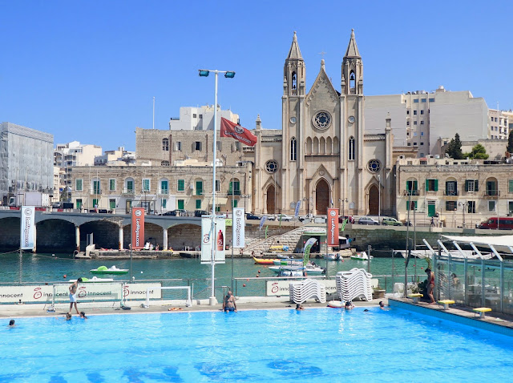 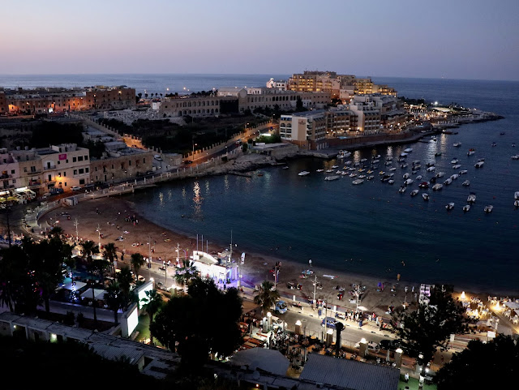Valletta é a capital de Malta, de lá saem ônibus para todas as regiões da ilha. Foi declarada Patrimônio Mundial da Unesco e para quem gosta de história, boa gastronomia e arquitetura medieval, vai amar essa capital. Você pode visitar o Forte de Valletta, os museus, a Co-Catedral de St John e de St. Paul e o Saluting Battery, onde todos os dias ao meio dia e às 16h acontece uma bateria de saudação dos canhões.
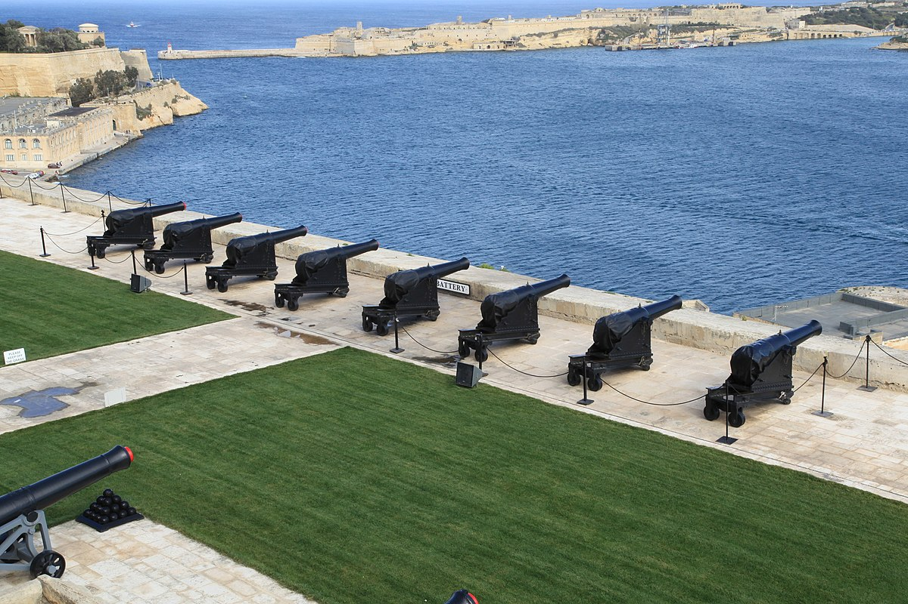Vittoriosa, Cospicua e Senglea as quais hoje se chamam Birgu, Isla e Bormla compõem o que chamamos de Three Cities. São perfeitas para conhecer os locais, que residem principalmente nessa região, que também é menos turistica. Lá você vai encontrar muitos palácios, fortificações e igrejas, além da marina de Vittoriosa com muitos iates atracados e boas opções de cafés e restautantes.
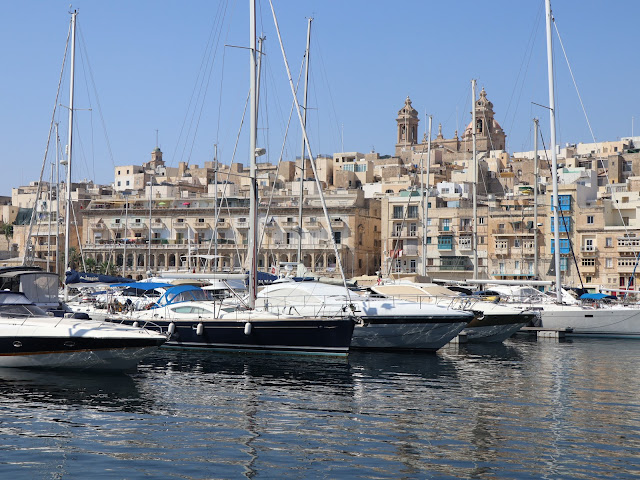Mdina é uma cidade medieval também conhecida como "Cidade Silenciosa" e foi construída em uma colina. Lá foram gravadas algumas cenas da famosa série Game Of Thrones, mais especificamente em Piazza Mesquita e em Mdina main gate (Portão principal da cidade). Do restaurante Palazzo de Piro, situado entre as muralhas da cidade, você tem uma visão do vale simplesmente espetacular.
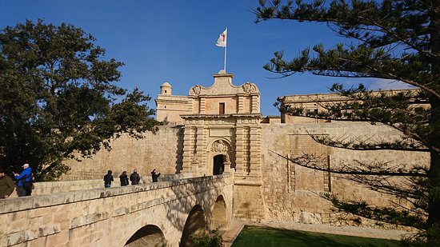 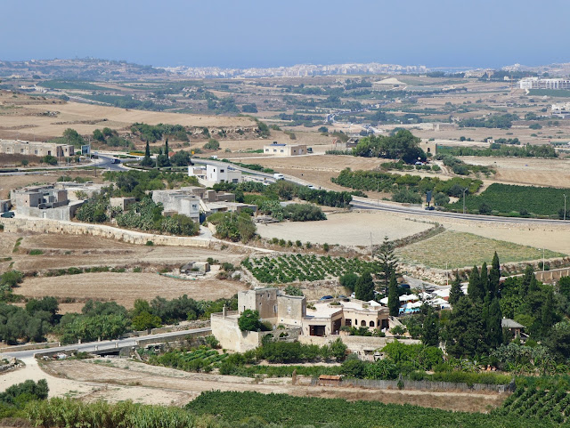Apesar de não ser uma cidade muito turistica, Mosta vale a visita. Lá se encontra a maior cúpula de Malta e a nona maior do mundo, a Cúpula de Mosta. A Basílica da Assunção de Nossa Senhora tem uma arquitetura impressionante e única. Durante a Segunda Guerra Mundial, uma bomba entrou pelo teto da igreja, onde estavam localizados cerca de 300 fiéis. A bomba porém não detonou, o povo maltês declarou isso como um milagre e contam essa história até hoje por lá. Aproveite para andar nas ruas de Mosta e ver as casas típicas.
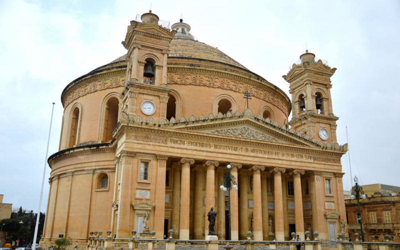Você pode até conhecer essas ilhas em um bate e volta, mas seria pouco para o que esses paraísos têm para oferecer. Em Gozo você pode conhecer Dwerja Bay, conhecida pela Azure Window que colapsou em 2017. Mas lá também você encontra outros lugares encantadores como Inland Sea, Blue Hole e Fungus Rock. Wied Il-Gharsi e Wied Il-Mielah são mais afastadas e escondidas mas a paisagem vale super a pena. Elas ficam ao norte da ilha, depois das salinas de Malsalforn, que também é imperdivel de visitar. Ainda em Gozo, visite o sítio arqueológico conhecido como templos de Ggantija, estão lá há mais de 5 mil anos e a visita é combinada com o Moinho de Ta’Kola, uma casa moinho que hoje é um museu.
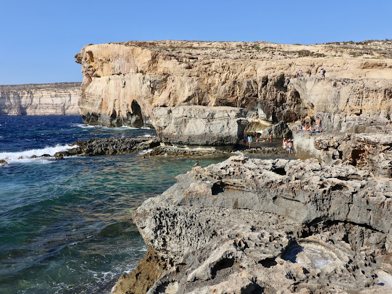 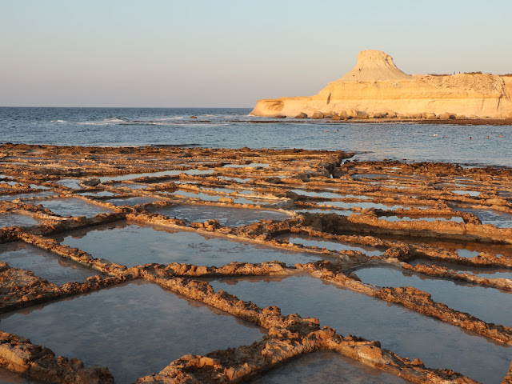Comino é menor, você pode deixar para visitar no último dia de estada em Gozo. Apesar de pequena é a ilha mais azul de Malta. Lá você pode visitar a famosa Blue Lagoon e a mais escondida e não menos magnifica Crystal Lagoon.
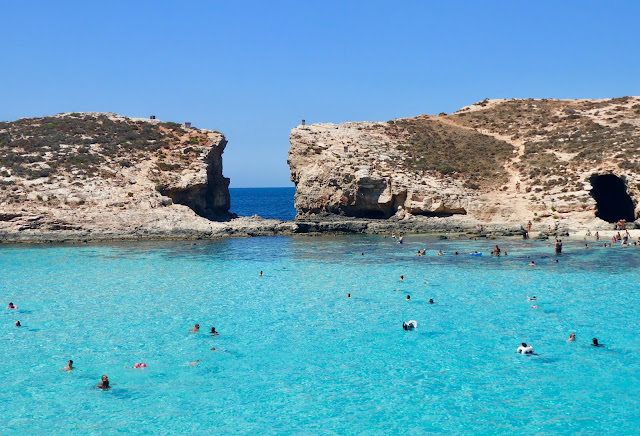Popeye Village fica a 3 quilômetros do terminal do ferry que vai para Gozo, por isso, vale a pena passar por lá na ida ou na volta da viagem. É um complexo que reúne os cenários construídos para o filme Popeye, com o ator Robin Williams e dá acesso a uma praia particular extremamente linda, a Anchor Bay.
Para entrar na Popeye Village é necessário comprar um ingresso, ele dará direito a todo entretenimento oferecido na vila, além do passeio de barco pela praia. Mas se não desejar entrar na vila, pode apenas olhar o complexo e a praia da parte de cima, um mirante cuja vista do pôr do sol é uma das mais lindas do mundo.
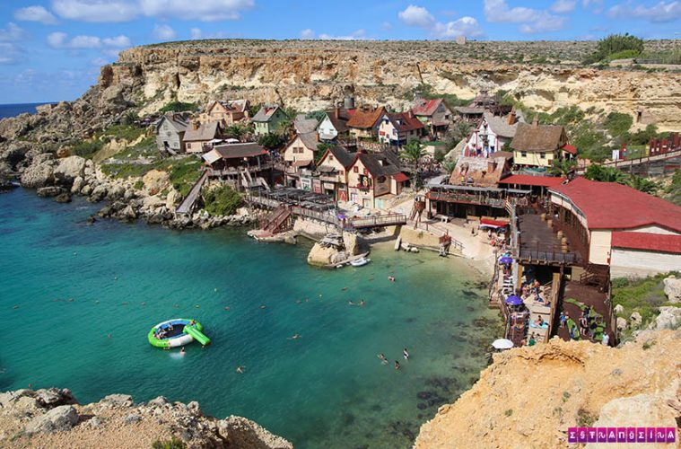Chegamos ao último dia e recomendamos muito que deixe para fazer esse passeio em um domingo, isso porque em Marsaxlokk de domingo acontece a Sunday Fish Market, uma feirinha a céu aberto que vende absolutamente de tudo! A feirinha e as barraquinhas com comida local é um charme a parte.
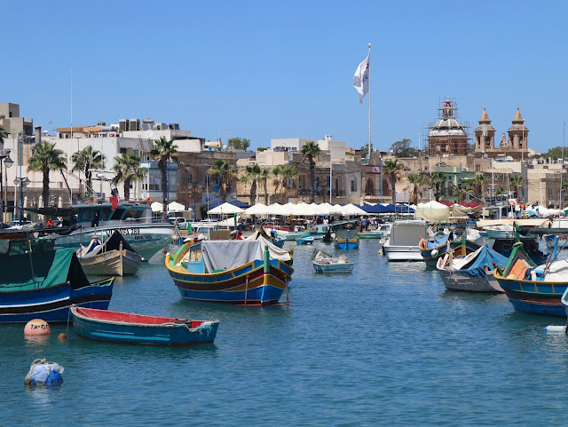Após passear pela feirinha, você pode ir até St Peter’s Pool aproveitar a exuberante piscina natural de lá. St Peter’s Pool é o lugar onde a famosa cachorrinha saltava das pedras para o mar junto com seu dono, talvez você já tenha visto o vídeo alguma vez.
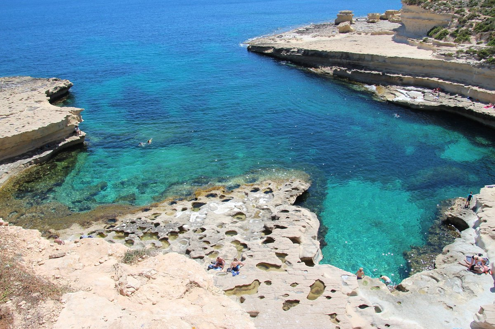Já em Zurrieq, perto de Marsaxlokk, encontra-se a Blue Grotto, que pode ser vista pelo mirante ou visitada num passeio de barco. Não importa qual dos dois você escolha, irá se encantar com a beleza do lugar.
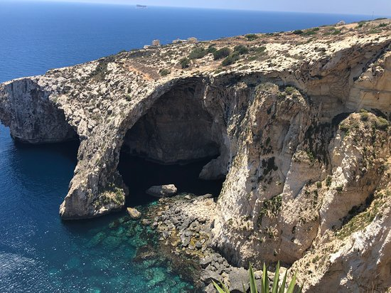© Copyright Janaina Santiago - Projeto final do curso Eu ProgrAmo por PrograMaria - 2022